농업기계기사 (2006-08-06 기출문제)
1과목: 재료역학
1. 그림과 같은 단순지지보에서 반력 RA는 몇 kN 인가?
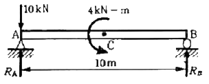
- 8
- 8.4
- 10
- 10.4
(정답률: 알수없음)

2. 그림과 같은 외팔보에 균일분포하중 ω가 전 길이에 걸쳐 작용할 때 자유단의 처짐 δ는 얼마인가? (단, E : 탄성계수, I : 단면2차모멘트)
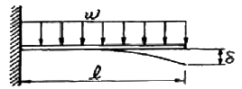
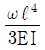
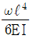
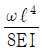
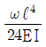
(정답률: 알수없음)
3. 지름 30mm, 길이 100 cm의 단면이 둥근 축 양단을 수직벽에 고정하였다. 온도를 80℃ 만큼 높였을 때 벽을 미는 힘의 크기는 몇 kN인가? (단, 팽창계수 a = 0.000012/℃, 탄성계수 E=210 GPa 이다.)
- 47.5
- 14.25
- 4.75
- 142.5
(정답률: 알수없음)
4. 그림에서 빗금친 부분의 도심(centroid)의 x좌표는? (단, 빗금친 부분에서 제외된 부분의 반지름 R= 60mm)
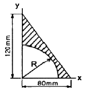
- 22.8 mm
- 24.2 mm
- 26.6 mm
- 28.4 mm
(정답률: 알수없음)
5. 연강 1cm3의 무게는 0.0785 N이다. 길이 15 m의 둥근봉을 매달 때 상단고정부에 발생하는 인장응력은 몇 kPa 인가?
- 0.118
- 1177.5
- 117.8
- 11890
(정답률: 알수없음)
6. 한 변의 길이가 2cm인 정사각형 단면을 갖는 길이 50 cm의 외팔보의 자유단에 집중 모멘트 M을 작용시킬 때 최대 처짐량이 5 cm가 되었다면 집중 모멘트 M은 얼마인가? 단, 탄성계수 E = 200 GPa 이다.)
- 1066.7 Nㆍm
- 1166.7 Nㆍm
- 126.7 Nㆍm
- 136.7 Nㆍm
(정답률: 알수없음)
7. 바깥지름이 안지름의 두 배인 중공축은 동일 단면적을 갖는 중실축과 비교했을 때 몇 배의 토크를 견디는가?
- 0.72
- 1.44
- 1.72
- 2.89
(정답률: 알수없음)
8. 최대 굽힘모멘트 Mmax = 800 kNㆍm를 받는 단면의 굽힘응력을 600 MPa로 하려면 직경은 약 몇 cm로 하면 되는가?
- 20
- 24
- 28
- 32
(정답률: 알수없음)
9. 직사각형(b×h)의 단면적 A를 갖는 보에 전단력 V가 작용할 때 최대 전단응력은?
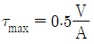
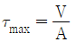
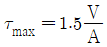
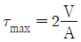
(정답률: 알수없음)
10. 그림과 같이 평면응력상태에 있는 어느 요소에서의 응력이 σx=50 MPa, σy=0, τxy=30 MPa 이다. 이 부분에 생기는 최대 주응력의 크기는 얼마인가?
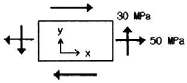
- 25 MPa
- 39 MPa
- 64 MPa
- 74 MPa
(정답률: 알수없음)
11. 그림과 같은 직사각형 단면에서 y1 = h/2 의 위쪽 면적(빗금 부분)의 중립축에 대한 단면 1차모멘트 Q는?
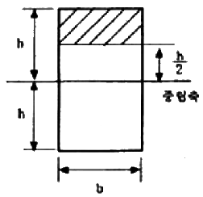
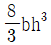
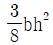
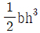
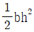
(정답률: 알수없음)
12. 마찰이 없는 매끈한 경사면에 강체보를 수평하게 놓고 힘 P를 가하여 보가 수평상태를 유지하기 위한 a, b, α1, α2 의 관계는?
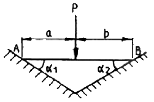
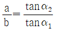
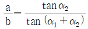
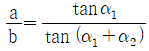
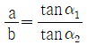
(정답률: 알수없음)
13. 비틀림 모멘트 2 kNㆍm가 지름 50mm인 축에 작용하고 있다. 축의 길이가 2m일 때 축의 비틀림각은 몇 rad인가? (단, 축의 전단 탄성계수 G= 85 GN/m2이다.)
- 0.019
- 0.028
- 0.⑤4
- 0.077
(정답률: 알수없음)
14. 평면응력의 경우 훅의 법칙(Hook's law)을 바르게 나타낸 것은? (단, σx : 수직응력, εx, εy : 변형률, μ : 포아송 비, E : 탄성계수 이다.)
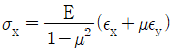
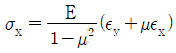
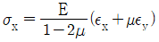
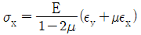
(정답률: 알수없음)
15. 그림과 같이 단순 지지보가 B점에서 반시계 방향의 모멘트를 받고 있다. 이때 최대의 처짐이 발생하는 곳은 A점으로 부터 얼마나 떨어진 거리인가?
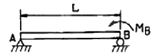
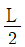
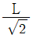
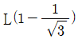
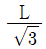
(정답률: 알수없음)
16. 그림과 같이 원형단면을 갖는 연강봉이 100kN의 인장하중을 받을 때 이 봉의 신장량은? (단, 탄성계수 E = 200 GPa이다.)
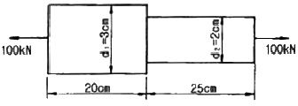
- 0.⑤4cm
- 0.1cm
- 0.2cm
- 0.3cm
(정답률: 알수없음)
17. 직경 20mm인 구리합금 봉에 30 kN의 축방향 인장하중이 작용할 때 체적변형률은 대략 얼미안가? (단, 탄성계수 E=100 GPa, 포와송비 μ=0.3)
- 0.38
- 0.038
- 0.0038
- 0.00038
(정답률: 알수없음)
18. 인장하중을 받고 있는 부재에서 전단음력 τ 가 수직응력 σ의 1/2 이 되는 경사단면의 경사각은?
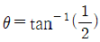
- θ = tan-1(1)
- θ = tan-1(2)
- θ = tan-1(4)
(정답률: 알수없음)
19. 길이 2m인 원형 단면 목재를 사용하여 기둥을 만들려고 한다. 이 경우 기둥의 양단은 핀으로 지지되고 25N 의 하중에 견디게 하려면 기둥이 최소지름은 몇 cm로 해야 하는가? (단, Euler의 좌굴공식을 적용하고 안전율은 5, 탄성계수 E=10 GPa 이다.)
- 10.08
- 8.08
- 12.08
- 14.08
(정답률: 알수없음)
20. 그림과 같은 축지름 50 mm의 축에 고정된 풀리에 1750 rpm, 7.35 kW의 모터를 벨트로 연결하여 전동하려고 한다. 키에 발생하는 전단응력(τ)과 압축응력(σ)은 몇 MPa인가? (단, 키의 치수(mm)는 b × h × L = 8 × 4 × 60 이다.)
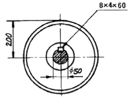
- τ = 3.34, σ = 6.68
- τ = 3.34, σ = 13.37
- τ = 4.34, σ = 13.37
- τ = 4.34, σ = 23.37
(정답률: 알수없음)
2과목: 기계열역학
21. 공기압축기의 입구 공기의 온도와 압력은 각각 27℃, 100 kPa이고, 체적유량은 0.01m3/s 이다. 출구에서 압력이 400kPa이고, 이 압축기의 단열효율이 0.8일 때, 압축기의 소요 동력은 약 얼마인가? (단, 공기의 정압비열과 기체상수는 각각 1 kJ/kgK, 0.287 kJ/kgK이고, 비열비 K는 1.4이다.)
- 1.4kW
- 1.7kW
- 2.1kW
- 4.0kW
(정답률: 알수없음)
22. 온도가 127℃, 압력이 0.5 MPa, 비체적 0.4 m3/kg인 이상기체가 같은 압력하에서 비체적이 0.3 m3/kg 으로 되었다면 온도는 약 몇 ℃ 인가?
- 95.25℃
- 27℃
- 100℃
- 20℃
(정답률: 알수없음)
23. 공기 2kg이 300K, 600 kPa 상태에서 500K, 400kPa 상태로 가열된다. 이 과정 동안의 엔트로피 변화량은 약 얼마인가? (단, 공기의 정적비열과 정압비열은 각각 0.717 kJ/kgK 과 1.004 kJ/kgK로 일정하다.)
- 0.73 kJ/K
- 1.83 kJ/K
- 1.02 kJ/K
- 1.26 kJ/k
(정답률: 알수없음)
24. 이상 오토사이클의 열효율이 56.5% 이라면 압축비는 약 얼마인가? (단, 작동 유체의 비열비는 1.4로 일정하다.)
- 7.5
- 8.0
- 9.0
- 9.5
(정답률: 알수없음)
25. 이상기체에서 내부에너지에 대한 설명으로 옳은 것은?
- 압력만의 함수이다.
- 체적만의 함수이다.
- 온도만의 함수이다.
- 엔트로피만의 함수이다.
(정답률: 알수없음)
26. 임계점 및 삼중점에 대한 설명 중 맞는 것은?
- 헬륨이 상온에서 기체로 존재하는 이유는 임계 온도가 상온보다 훨씬 높기 때문이다.
- 초임계 압력에서는 두 개의 상이 존재한다.
- 물의 상중점 온도는 임계 온도보다 높다.
- 임계점에서는 포화액체와 포화증기의 상태가 동일하다.
(정답률: 알수없음)
27. 300K 에서 400K 까지의 온도 구간에서 공기의 평균 정적비열은 0.721 kJ/kgK 이다. 이 온도 범위에서 공기의 내부 에너지 변화량은?
- 0.721 kJ/kg
- 7.21 kJ/kg
- 72.1 kJ/kg
- 721 kJ/kg
(정답률: 알수없음)
28. 어른이 하루에 2200 kcal의 음식을 섭취한다고 한다. 이 사람이 발생하는 평균 열량[W]은 약 얼마인가? (단, 1kcal은 4180 J 이다.)
- 63
- 88
- 98
- 106
(정답률: 알수없음)
29. 그림과 같이 다수의 추를 올려놓은 피스톤이 끼워져 있는 실린더에 들어 있는 가스를 계로 생각한다. 최초압력이 300 kPa 이고, 초기 체적은 0.⑤m3 이다. 열을 가하여 피스톤의 상승과 동시에 계의 가스온도를 일정하게 유지하도록 피스톤의 무게를 감소 시킬 수 있다고 하여 이상기체모델로 타당하다면 이 과정 중에 계가 한 일은? (단, 상승 후의 체적은 0.2m3 이다.)
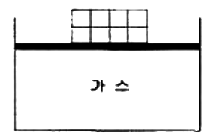
- 10.79 kJ
- 15.79 kJ
- 20.79 kJ
- 25.79 kJ
(정답률: 알수없음)
30. 열역학 과정을 비가역으로 만드는 인자가 아닌 것은?
- 마찰
- 열의 일당량
- 유한한 온도 차에 의한 열전달
- 두 개의 서로 다른 물질의 혼합
(정답률: 알수없음)
31. 그림과 같은 증기압축 냉동사이클이 있다. 1, 2, 3 상태의 엔탈피가 다음과 같을 때 냉매의 단위 질량당 소요 동력과 냉각량은 얼마인가? (단, h1=178.16, h2=210.38, h3=74.53, 단위:kJ/kg)
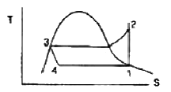
- 33.22 kJ/kg, 103.63 kJ/kg
- 33.22 kJ/kg, 136.85 kJ/kg
- 103.63 kJ/kg, 33.22 kJ/kg
- 136.85 kJ/kg, 33.22 kJ/kg
(정답률: 알수없음)
32. 시속 30 km로 주행하는 질량 3060 kg의 자동차가 브레이크를 밟고서 8.8 m에서 정지하였다. 이때 베어링 마찰 등을 무시하고 브레이크 만으로 정지 하였다고 하면, 브레이크 장치에서 발생한 열량은 약 몇 kJ 인가? (단, 타이어와 노면 사이의 마찰 계수는 0.4이다.)
- 106
- 0.69
- 256
- 0.82
(정답률: 알수없음)
33. 두께 1 cm, 면적 0.5m2의 석고판의 뒤에 가열 판이 부착되어 1000 W의 열을 전달한다. 가열 판의 뒤는 완전히 단열 되어있고, 석고판 앞면의 온도는 100℃이다. 석고의 열전도율이 k = 0.79 W/mK 일 때 가열 판에 접하는 석고 면의 온도는?
- 110.2 ℃
- 125.3 ℃
- 150.8 ℃
- 212.7 ℃
(정답률: 알수없음)
34. 다음 설명 중 틀린 것은?
- 마찰은 대표적인 비가역 현상이다.
- 자동차 엔진이 가역적으로 작동 될 때 출력이 가장 크다.
- 엔진이 가역적으로 작동되면 열효율이 100%가 된다.
- 80℃의 구리가 20℃의 물속에서 온도가 내려가는 현상은 비가역 현상이다.
(정답률: 알수없음)
35. Rankine Cycle로 작동하는 증기원동소의 각 점에서의 엔탈피가 다음과 같을 때 열효율은? (단, 보일러입구:303 kJ/kg, 보일러출구: 3553 kJ/kg, 터빈출구:2682 kJ/kg, 복수기(응축기)출구:300 kJ/kg 이다.)
- 26.7 %
- 30.8 %
- 32.5 %
- 33.6 %
(정답률: 알수없음)
36. 압력 1 N/cm2, 체적 0.5m3 인 기체 1kg을 가역적으로 압축하여 압력이 2 N/cm2, 체적이 0.3m3로 변화되었다. 이 과정이 압력-체적(P-V)선도에서 직선적으로 나타났다면 필요한 일의 양은?
- 2000 N˙m
- 3000 N˙m
- 4000 N˙m
- 5000 N˙m
(정답률: 알수없음)
37. 이상기체의 열역학 과정을 일반적으로 Pvn = C (C는 상수)로 표현할 때 n에 따른 과정을 설명한 것으로 맞는 것은?
- n = 0 이면 등온과정
- n = 1 이면 정압과정
- n = 1.5 이면 등온과정
- n = ∞ 이면 정적과정
(정답률: 알수없음)
38. 다음과 같은 온도범위에서 작동하는 카르노(Carnot) 사이클 열기관이 있다. 이 중에서 효율이 가장 좋은 것은?
- 0℃ 와 100℃
- 100℃와 200℃
- 200℃ 와 300℃
- 300℃ 와 400℃
(정답률: 알수없음)
39. 견고한 밀폐 용기 안에 공기가 압력 100 kPa, 체적 1m3, 온도 20℃ 상태로 있다. 이 용기를 가열하여 압력이 150kPa이 되었다. 공기는 이상 기체로 취급하며, 정적비열은 0.717 kJ/kgK, 기체 상수는 0.287 kJ/kgK이다. 최종 온도와 가열량은 약 얼마인가?
- 303K, 98 kJ
- 303K, 117 kJ
- 440K, 1⑤ kJ
- 440K, 125 kJ
(정답률: 알수없음)
40. 완전 단열된 축전지를 전압 12V, 전류 3A로 1시간 동안 충전한다. 축전지를 시스템으로 삼아 1시간 동안 행한 일과 열은 약 얼마인가?
- 일 = 36 kJ, 열 = 0 kJ
- 일 = 0 kJ, 열 = 36kJ
- 일 = 129.6kJ, 열 = 0 kJ
- 일 = 0 kJ, 열 = 129.6 kJ
(정답률: 알수없음)
3과목: 기계유체역학
41. 비중이 S 인 액체의 표면으로부터 h [m] 깊이에 있는 점의 압력은 수은주로 몇 m 인가? (단, 수은의 비중은 13.6 이다.)
- 13.6 Sh
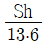
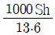
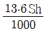
(정답률: 알수없음)
42. 매우 넓은 두 저수지 사이를 내경 300mm의 원관으로 연결 했을 때, 자유수면 높이차가 3m인 그림과 같은 계(system)의 동력손실은 몇 W 인가?
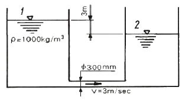
- 636000
- 25364
- 6234
- 0
(정답률: 알수없음)
43. 점성계수 μ= 0.98 Nㆍs/m2인 뉴턴 유체가 수평벽면위를 평행하게 흐른다. 벽면(y=0) 근방에서의 속도분포가 u = 0.5-150(0.1-y)2 이라고 할 때 벽면에서의 전단 응력은 몇 N/m2 인가? (단, y(m)는 벽면에 수직한 방향의 좌표를 나타내며, u는 벽면 근방에서의 접선속도(m/s)이다.)
- 3
- 29.4
- 0
- 0.306
(정답률: 알수없음)
44. 그림과 같은 원관 벤드에 물이 흐르고 있다. 벤드의 출구에서는 물의 분류가 10 m/s의 속도로 대기로 분출된다. 입구의 계기압력이 100 kPa일 때, 원관 벤드를 지탱하는 수평방향의 힘 F는 몇 kN 인가? (단, 물과 원관 벤드의 무게는 무시한다.)
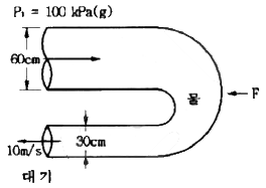
- 19.5
- 1.7
- 8.8
- 37.1
(정답률: 알수없음)
45. 어떤 탱크 속에 물이 있는 산소의 밀도는 온도가 25℃ 일 때 2.0 kg/m3 이다. 대기압이 97 kPa 이라면, 이 산소의 압력은 계기압력으로 약 몇 kPa 인가? (단, 기체상수는 259.8 J/kg·K 이다.)
- 58
- 62
- 66
- 70
(정답률: 알수없음)
46. 주 날개의 평면도 면적이 21.6m2 이고 무게가 20kN인 경비행기의 이륙속도는 약 몇 km/hr 이상이어야 하는가? (단, 공기의 밀도는 1.2 kg/m3, 주 날개의 양력계수는 1.2이고, 항력은 무시한다.)
- 41
- 91
- 129
- 141
(정답률: 알수없음)
47. 그림과 같이 반경 2m, 폭 4 m인 4분원 곡면에 작용하는 물에 의한 힘의 수직성분의 크기는 몇 kN인가?
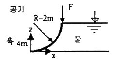
- 123
- 87
- 56
- 34
(정답률: 알수없음)
48. 주철관을 사용한 관로 유동에서 관 마찰계수가 0.038이고 안지름이 24cm이다. 이 관의 입구에서 7.84 MPa의 압력을 가하여 물을 평균 2 m/s로 수송한다면 물을 수송할 수 있는 관로의 길이는 몇 m 인가? (단, 이 관로에서는 입구 압력의 20%가 손실된다.)
- 4392
- 4513
- 4735
- 4952
(정답률: 알수없음)
49. 경사가 30° 인 수로에 물이 흐르고 있다. 유속이 12m/s로서 흐름이 균일하다고 가정하면 연직으로 측정한 수심이 60cm인 수로의 단위 폭(1m) 당 유량은 몇 m3/s 인가?
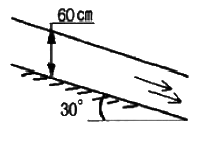
- 5.87
- 6.24
- 6.82
- 7.2
(정답률: 알수없음)
50. 수평으로 놓인 파이프에 면적이 10cm2인 오리피스가 설치되어 있고 물이 5kg/s만큼 흐른다. 오리피스 전후의 압력 차이가 8kPa이면 이 오리피스의 유량계수는?
- 0.63
- 0.72
- 0.88
- 1.25
(정답률: 알수없음)
51. 길이 100 m인 배가 10 m/s의 속도로 항해한다. 길이 2m인 모형배를 만들어 조파저항을 측정한 후 원형배의 조파저항을 구하고자 동일한 조건의 해수에서 실험을 하고자 한다. 모형배의 속도를 몇 m/s 로 하면 되겠는가?
- 500
- 70.7
- 0.2
- 1.41
(정답률: 알수없음)
52. 유체의 점성계수의 단위인 1 Poise는?
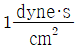
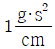
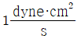
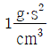
(정답률: 알수없음)
53. 다음 중 비행기의 공기역학적 특성에 영향을 주는 인자와 가장 관련이 적은 것은?
- 비행 속도
- 날개의 형상
- 영각
- Weber 수
(정답률: 알수없음)
54. 태풍과 같이 강한 선회를 동반하는 열대성 저기압 대기의 유동은 중심부의 강제 와류(forced vortex)와 바깥 쪽의 자유 와류(free vortex)를 혼합한 혼합 와류(combined vortex)로 근사시킬 수 있다. 중심부와 바깥 쪽의 유동은 각각 회전 유동인가 비회전 유동인가?
- 중심부-비회전, 바깥 쪽-비회전
- 중심부-비회전, 바깥 쪽-회전
- 중심부-회전, 바깥 쪽-비회전
- 중심부-회전, 바깥 쪽-회전
(정답률: 알수없음)
55. 물의 체적탄성계수가 E = 2 GPa일 때 물의 체적을 0.4% 감소시키려면 얼마의 압력을 가하여야 하는가?
- 8 kPa
- 6 kPa
- 8 MPa
- 6 MPa
(정답률: 알수없음)
56. 수평면으로부터 θ = 60˚ 위 방향으로 향한 노즐에서 물이 분출되고 있다. 노출 출구에서 물의 속도가 20m/s라면 물의 최고 상승 위치의 수직 높이는 약 몇 m 인가?
- 15.3
- 18.9
- 20.5
- 24.3
(정답률: 알수없음)
57. 상온, 대기압이 공기(밀도는 1.23kg/m3)가 레이놀즈 수 700인 상태에서 직경 5mm인 원형관 내부로 흐르고 있다. 입구로부터 0.1m 되는 위치까지의 압력강하는? (단, 동점성계수는 1.46×10-5 m2/s 이다.)
- 2.6 Pa
- 4.7 Pa
- 6.4 Pa
- 10.2 Pa
(정답률: 알수없음)
58. 길이, 속도, 시간, 동점성계수를 각각 L, V, t, ν 로 표시할 때 함수 F(L, V, t, ν)=0에서 π파라미터(독립 무차원수)는 몇 개인가?
- 1
- 2
- 3
- 4
(정답률: 알수없음)
59. 그림과 같은 수조에서 파이프를 통하여 흐르는 유량(Q)은 몇 m3/s인가? (단, 마찰손실 무시)
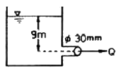
- 9.39 ×10-3
- 1.25×10-4
- 0.939
- 0.125
(정답률: 알수없음)
60. 단면이 원형인 직선 관로 내의 층류 유동에서 관양단에 일정한 압력차가 주어져 있는 경우 유량 Q와 지름 D와의 관계는?
- Q는 D에 비례
- Q는 D2에 비례
- Q는 D3에 비례
- Q는 D4에 비례
(정답률: 알수없음)
4과목: 농업동력학
61. 기관의 냉각수 온도를 일정하게 유지하기 위하여 자동적으로 작동하는 밸브에 의해 수온을 자동조절하는 장치는?
- 냉각 팬(cooling fan)
- 물 펌프(water pump)
- 서모스탯(thermostat)
- 라디에이터 캡(radiator cap)
(정답률: 알수없음)
62. 트랙터의 견인계수에 관한 설명으로 틀린 것은?
- 구동륜에 작용하는 수직하중에 대한 견인력과 운동저항의 비이다.
- 구동축으로 전달된 동력에 대한 견인동력의 비로도 정의된다.
- 구동륜이 견인할 수 있는 견인하중의 크기를 나타낸다.
- 견인성능을 표시하는 중요한 변수이다.
(정답률: 알수없음)
63. 다음 중 기관의 기계효율을 바르게 정의한 것은?
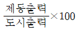
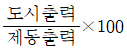
(정답률: 알수없음)
64. 다음은 디젤 기관의 연소과정이다. 이에 속하지 않는 것은?
- 착화지연기간
- 제어연소기간
- 연료분사지연기간
- 급격연소기간
(정답률: 알수없음)
65. 축전지의 충전도는 비중을 측정하여 판단한다. 완전히 충전된 축전지 전해액의 비중은 약 얼마 정도인가?
- 1.07
- 1.17
- 1.27
- 1.37
(정답률: 알수없음)
66. 연소실 체적이 91 cc이고 실린더 안지름이 90mm, 행정이 100 mm인 기관의 압축비는 약 얼마인가?
- 5
- 6
- 8
- 9
(정답률: 알수없음)
67. 피스톤 속도 12m/sec이고, 4행정 기관의 회전수가 3600rpm 인 경우 피스톤의 행정은 얼마인가?
- 10 cm
- 20 cm
- 40 cm
- 100cm
(정답률: 알수없음)
68. 4행정 사이클 기관과 비교할 때 2행정 사이클 기관의 장점은?
- 연료 소비율이 적다.
- 체적효율이 높다.
- 기계적 소음이 적으며 고장이 적다.
- 실린더를 과열시키는 일이 적다.
(정답률: 알수없음)
69. 트랙터 앞바퀴를 앞쪽에서 보면 수직선에 대하여 1.5 ~ 2.0˚ 경사가 져 지면에 닿는 쪽이 좁게 되어 있는 데 이는 축의 비틀림을 적게하여 주행시 안정성을 유지하는데 중요한 역할을 한다. 이 각을 의미하는 용어는?
- 토인
- 캐스터각
- 캠버각
- 킹핀경사각
(정답률: 알수없음)
70. 트랙터에 설치된 차동 잠금장치(differential lock)에 대한 설명으로 가장 적합한 것은?
- 습지와 같이 토양 추진력이 약한 곳에는 사용할 수 없다.
- 미끄러지기 쉬운 지면에는 사용하기 어렵다.
- 회전 할 때만 사용한다.
- 차륜의 슬립이 심할 경우 사용한다.
(정답률: 알수없음)
71. 트랙터의 주행장치용 공기타이어에서 타이어의 골조가 되는 중요부분으로 타이어가 받는 하중, 충격, 공기압에 견디는 역할을 하는 부분은?
- 비드부
- 카커스부
- 쿠션부
- 드레드부
(정답률: 알수없음)
72. 트랙터 작업기의 부착방식에서 견인식과 비교할 때 직접 장착식의 특징 중 틀린 것은?
- 견인력이 감소한다.
- 유압제어가 용이하다.
- 작업기의 운반이 용이하다.
- 전장이 짧고 회전 반경이 작다.
(정답률: 알수없음)
73. 보기와 같이 배열된 4기통 4사이클 직렬형 기관의 점화 순서로 가장 적합한 것은?
- 1 → 2 → 3 → 4
- 1 → 3 → 2 → 4
- 1 → 3 → 4 → 2
- 1 → 4 → 3 → 2
(정답률: 알수없음)
74. 보기는 직류 전동기의 접속 방법을 나타낸 회로도이다. 다음 중 어느 전동기의 회로도인가?
- 분권 전동기
- 화동 복권 전동기
- 직권 전동기
- 차동 복권 전동기
(정답률: 알수없음)
75. 다음 중 트랙터용 교류 발전기(alternator)의 주요 구성요소가 아닌 것은?
- 정류자
- 다이오드
- 회전자
- 고정자
(정답률: 알수없음)
76. 3점 링크 히치에 유압장치를 사용함으로써 발생되는 장점이 아닌 것은?
- 3점 히치 상하 조작이 리프팅 암을 상하로 작동시킴으로써 이루어진다.
- 유압 조작레버의 위치에 관계없이 작업기의 상하조 작은 항상 일정한 위치로 자동조정된다.
- 플라우의 견인력 제어나 위치제어와 같은 제어가 가능하다.
- 작업기의 무게가 트랙터 후차륜에 증가 시킴으로써 큰 견인력을 얻을 수 있다.
(정답률: 알수없음)
77. 디젤기관에서 연료의 점도가 높을 때 나타나는 현상이 아닌 것은?
- 연료소비량이 증가한다.
- 연료의 분산성이 나빠진다.
- 분사펌프와 분사노즐의 수명이 짧아진다.
- 연료의 펌핑이나 분사가 어렵다.
(정답률: 알수없음)
78. 실린더 내경이 70mm, 행정이 82mm, 연소실 용적이 58cc인 4행정사이클 4기통 기관의 총 배기량은 약 몇 cc인가?
- 1262
- 1320
- 632
- 373
(정답률: 알수없음)
79. 트랙터 유압 장치의 구성 요소가 아닌 것은?
- 유압 펌프
- 제어 밸브
- 축압기
- 너클 암
(정답률: 알수없음)
80. 다음 중 가솔린 엔진에 사용되는 기본사이클인 것은?
- 디젤 사이클
- 사바테 사이클
- 오토 사이클
- 카르노 사이클
(정답률: 알수없음)
5과목: 농업기계학
81. 동력 분무기의 주요 구조와 관계가 없는 것은?
- 플런저 펌프
- 송풍기
- 공기실
- 압력조절장치
(정답률: 알수없음)
82. 정지 작업기인 로터리의 구동 방식이 아닌 것은?
- 측방구동식
- 복합구동식
- 중앙구동식
- 분할구동식
(정답률: 알수없음)
83. 농산물의 부유속도의 원리를 응용한 선별기는?
- 벨트 선별기
- 홈 선별기
- 요동 선별기
- 공기 선별기
(정답률: 알수없음)
84. 경운 작업의 일반적인 목적으로 틀린 것은?
- 뿌리 내릴 자리와 파종할 자리에 알맞은 흙의 구조를 마련 함
- 잡초를 제거하고 불필요하게 과밀한 작물을 제거함
- 흙과 비료 또는 농약 등을 잘 분리하는 효과가 있음
- 등고선 경운이나 지표의 피복물을 적절히 설치하여 토양의 침식 방지 함
(정답률: 알수없음)
85. 원판 플라우에 대한 설명으로 가장 적합한 것은?
- 몰드보드 플라우에 비하여 마찰이 크다.
- 원판각이 클수록 경폭이 증가된다.
- 원판 앞에 부착된 콜터가 흙의 부착을 방지한다.
- 심경이 어렵다.
(정답률: 알수없음)
86. 마찰식과 연삭식 정미기에 대한 설명 중 올바른 것은?
- 마찰식 정미기는 높은 압력에서 강층을 제거하기 때문에 쇄미 발생률이 높다.
- 연삭식 정미기는 높은 압력에서 찰리 및 마찰작용에 의하여 강층을 제거하나 쇄미 발생률은 높다.
- 마찰식 정미기는 생산되는 백미의 표면은 매끄럽지 못하다.
- 연삭식 정미기는 생산되는 백미의 표면은 매끄럽다.
(정답률: 알수없음)
87. 일반적으로 소맥을 밀가루와 밀기울로 분리하는 공정의 순서로 가장 적합한 것은?
- 압쇄공정 → 파쇄공정 → 체별공정 → 정제공정
- 압쇄공정 → 체별공정 → 정제공정 → 파쇄공정
- 파쇄공정 → 체별공정 → 정제공정 → 압쇄공정
- 파쇄공정 → 압쇄공정 → 체별공정 → 정제공정
(정답률: 알수없음)
88. 고무롤 현미기의 구성 및 작동원리에 관한 설명으로 틀린 것은?
- 고정롤과 유동롤로 구성되어 있다.
- 고무롤 간격조절장치로 두 롤의 간격을 조절한다.
- 유동롤보다 고정롤의 회전속도가 빠르다.
- 고정롤과 유동롤의 회전방향은 동일하다.
(정답률: 알수없음)
89. 배토판 날개의 폭을 조절할 수 있는 배토판(培土板) 형식은?
- 고정식
- 개폐식
- 인출식
- 갱식
(정답률: 알수없음)
90. 로터리 모어의 특징을 잘못 설명한 것은?
- 조밀한 목초나 쓰러진 목초는 예취가 불가능하다.
- 구조가 간단하고 취급과 조작이 용이하다.
- 지면이 평탄하지 않은 곳에서의 작업은 위험하다.
- 왕복식 모어 보다 소음이 크다.
(정답률: 알수없음)
91. 습량기준 함수율(m)이 20%인 100kg의 곡물을 습량기준 함수율(m)이 15%가 될 때까지 건조시키면 이 때 제거된 수분의 량은?
- 7.8 kg
- 6.5 kg
- 5.9 kg
- 4.8 kg
(정답률: 알수없음)
92. 탈곡작용은 주로 급동의 운동 에너지에 의해 이루어진다. 급동의 무게가 일정하면 급동의 운동 에너지는?
- 회전속도에 반비례한다.
- 급동의 반지름에 비례한다.
- 회전속도의 자승에 비례한다.
- 급동의 지름에 반비례한다.
(정답률: 알수없음)
93. 일정한 간격의 줄에 종자를 한 알 또는 여러 알씩 일정한 간격으로 뿌리는 파종기는?
- 이식기
- 산파기
- 조파기
- 점파기
(정답률: 알수없음)
94. 완전히 마르기 전의 무게가 100kg, 완전히 마른 후의 무게가 80kg의 벼의 건량기준 함수율(%, ab)은?
- 30
- 25
- 20
- 15
(정답률: 알수없음)
95. 동력탈곡기에서 급치의 선단과 수망 사이의 간격(틈새)이 커질 경우의 설명으로 맞는 것은?
- 소요 동력과 곡립 손상이 증가한다.
- 소요 동력과 곡립 손상이 감소한다.
- 소요 동력은 증가하고 곡립 손상이 감소한다.
- 소요 동력은 감소하고 곡립 손상이 증가한다.
(정답률: 알수없음)
96. 채소 등 밭작물용 이식기의 설명으로 틀린 것은?
- 파종기와 같이 구절기, 복토기, 진압륜으로 구성되어 있으나 심는 깊이가 깊어 대형이다.
- 식부기구에서 타이밍이 일치하지 않아도 묘는 손성되지 않고 똑바로 심어진다.
- 묘판에서 생육한 묘를 한 포기씩 분리하여 수작업으로 식부부에 공급하는 반자동식이 있다.
- 트랙터로 견인하며 심은 후에 물을 주는 장치를 갖춘 것도 있다.
(정답률: 알수없음)
97. 착유기의 주요 구성 요소가 아닌 것은?
- 반크리너
- 맥동호스
- 파지기(milk claw)
- 유두컵
(정답률: 알수없음)
98. 쟁기 구조 중 파 올린 흙을 받아서 옆으로 반전 파쇄하는 부분은?
- 보습
- 볏
- 바닥쇠
- 숱바닥
(정답률: 알수없음)
99. 다음 정맥기에 관한 설명 중 틀린 것은?
- 맥류는 벼에 비하여 정맥 작용이 어렵다.
- 보리의 도정에는 물을 이용하는 가수 도정법이 있다.
- 연삭식 정맥기의 경우 금강사 롤러 표면의 경도는 정맥 효율에 큰 영향을 미친다.
- 정맥실 내의 압력은 입구 유량으로 조절하나 정맥 정도와는 관계가 없다.
(정답률: 알수없음)
100. 벌류트(volute) 펌프는 다음 중 어떤 펌프의 종류에 해당되는가?
- 원심 펌프
- 축류 펌프
- 사류 펌프
- 왕복 펌프
(정답률: 알수없음)